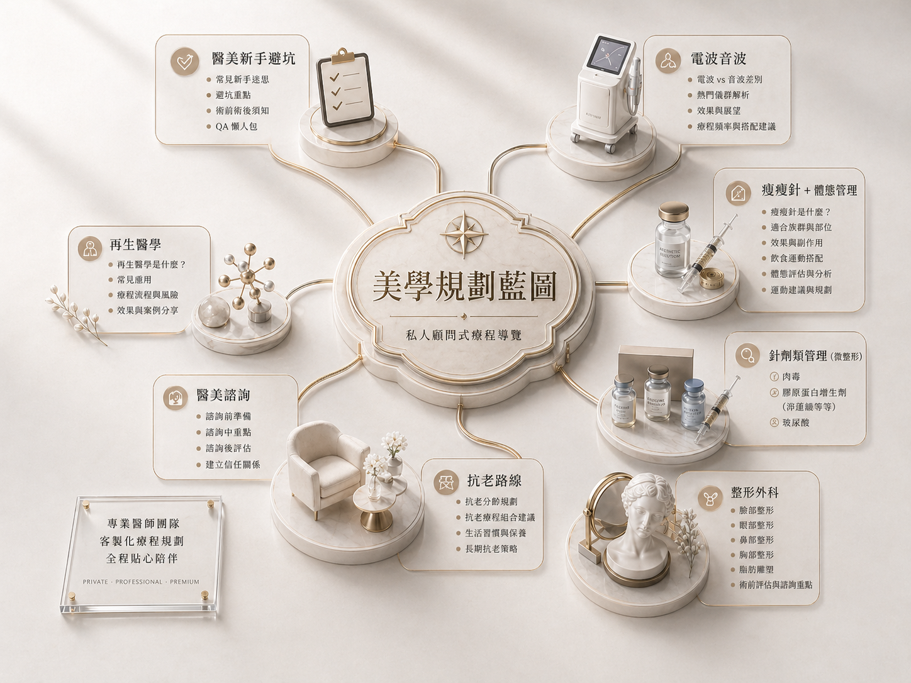

醫美避坑
療程選擇、預算判斷、副作用、恢復期、診所諮詢前一定要問的問題
品牌定位
蘇菲不是醫師，也不取代正式診療。她是把菲菲的護理、醫療器材銷售與醫美營運經驗， 轉譯成「消費者能理解的問題清單」。這裡談療程，不販賣焦慮；談趨勢，也會把法規、 風險與診所話術一起拆開。你不需要在資訊最多的時候立刻做決定，你需要先知道該問什麼。
療程選擇、預算判斷、副作用、恢復期、診所諮詢前一定要問的問題
從營運視角拆解療程組合、諮詢流程、話術包裝與高單價服務如何被設計
把複雜療程知識整理成清楚的文章、問題清單與判斷筆記，讓判斷可以被累積
從這裡開始看
如果你是第一次接觸醫美
如果你是醫美從業者
如果你想持續收到整理
如果你正在考慮醫美，但不確定自己適合什麼療程、預算該怎麼抓、諮詢時該問什麼， 這份清單會幫你先把判斷力找回來。

文章閱讀
不追熱鬧，不堆名詞。每一篇都幫你把療程、風險、預算與諮詢問題整理成能帶進診間的判斷
下一步
幫你釐清療程選擇、預算、風險與諮詢問題。
從膚質、輪廓、鬆弛、疲態與恢復期，整理真正需要比較的選項。
把你最容易被話術帶走的地方，變成可以直接問出口的問題。